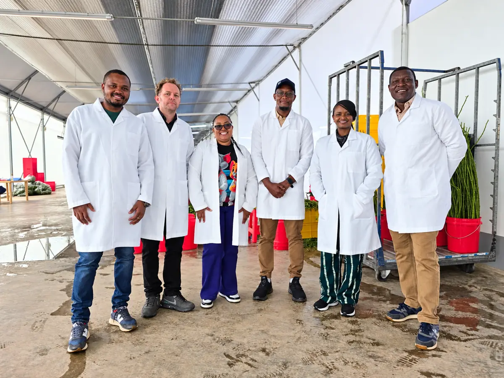

Our Story
Built from the land up
A Kenyan-owned and operated rose farm, in development in Timau.
“We should not decide what the market wants from Timau. We should listen first,”
Altura Blooms starts from a belief that the market should shape the assortment. Importers, wholesalers and bouquet makers are part of the conversation from the beginning.
Our people
Founders
- Juliet NjoguFounder
- Francis NjoguFounder
- Edward Agg-ManningCo-Founder · Commercial Director
Commercial and strategic direction
Leadership
- Nicholas KadiriGeneral Manager
Farm development and operational setup - Irene Nkatha KaburuHead of Commercial
Customer development and international market relationships
